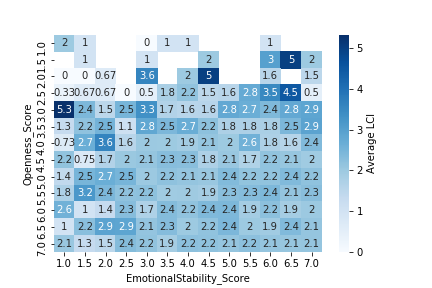
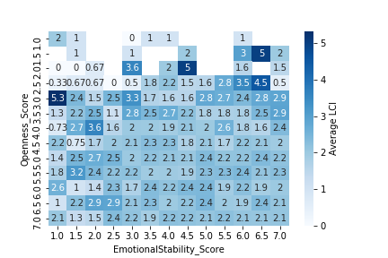

Til Death Do Us
Chart
 Scott Mcalister
Scott Mcalister
 Thomas Oldfield
Thomas Oldfield
 Heather Rodney
Heather Rodney
 Brian Rotolo
Brian Rotolo
 Elizabeth Yim
Elizabeth Yim
Background
❝
I get knocked down, but I get up again, and you’re never gonna keep me down. Chumbawamba, 1997
This project utilizes data from the National Longitudinal Survey of Youth 1997, sponsored by the U.S. Bureau of Labor Statistics. This study was dedicated to tracking the labor market and other life experiences of American men and women. The 1997 study was chosen over the 1979 study because it is closer (and therefore more relevant) to the ages of the majority of our classmates. The 1997 study also included variables that were of interest, like respondents' cohabitation.
We utilized Pandas, Plotly, and Seaborn to explore the data and determine the needs and focus of our model. This allowed us to visualize the potential relationships between certain variables seen below. Out of this exploration, we coined the term and engineered the Longitudinal Chaos Index.
The Longitudinal Chaos Index (LCI) is a measure of the objective chaos of a subject’s love life throughout the study. The more changes in your relationship/marital status, the higher your LCI. To create the LCI feature, we looked at reported marital status over the span of the study. The specific interview question used in the study was “Respondent's marital status in this month in [1994-2016]," which was recorded every month after the subject’s fourteenth birthday. There were six possible responses:
- Never Married, Not Cohabitating
- Never Married, Cohabitating
- Married
- Legally Separated
- Divorced
- Widowed
The LCI was designed to start at zero for each subject and increase with any change to the research question response. All but two changes result in an increase by one point. The first exception is the change from “Never Married, Cohabitating” to “Married,” which we determined would not increase a subject’s chaos and therefore does not change the LCI. The second exception is the change from “Married” to “Divorced,” which increases the LCI by two points. After the survey subjects’ LCIs were calculated, we created scoring divisions to categorize LCIs into final, qualitative measurements:
- Sad and Alone (SA)
- Happy Together (HT)
- It’s About the Journey (AJ)
- Train Wreck (TW)
Exploration
 

Machine Learning
After defining the LCI, we created a simple model (click to open/close the single iterator code viewer) to evaluate each variable individually and determine which variables most affected LCI. We then created a multiple linear regression model (click to open/close the model regression code viewer) to predict LCI based on life events.
Click to open/close the eleven most predictive interview questions and the adjustments made to fit our predictive model.
Then, continue below to see visualizations for the top three predictive variables.
| Rank | Year | Interview Question | Possible Responses | Model Adjustments |
|---|---|---|---|---|
| 9% | 1999 | Have you had sexual intercourse since the last interview on [date of last interview], that is, made love, had sex, or gone the way with a person of the opposite sex? |
|
Approximate equivalent to age 18 |
| 8% | 2014 | Respondent's marital status in this month [July] in 2014? |
|
Approximate equivalent to age 33 (current age for participants under age 33) |
| 7% | 2002 | Relationship of the parent figure(s)/guardian(s) in household to the youth as of the survey date? |
|
Approximate equivalent to age 21 |
| 7% | 2014 | Respondent's monthly arrest status in March 2014? (Calculated for each month beginning with the month that R turned 12.) |
|
Approximate equivalent to monthly average at age 33 (current age for participants under age 33) |
| 6% | 1997 | Delinquincy Score Index? (Scores range from 0 to 10; higher scores indicate more incidents of delinquency.) |
|
Approximate equivalent to age 16 |
| 5% | 2011 | Total respondent timing from round 15 interview (measured in seconds). This is the total interview time excluding the interviewer remarks, the locator section, and the locator questions in the household information section. |
|
Unmeasurable for predictive model, therefore excluded |
| 5% | 1998 | Substance Use Index? (Scores range from 0 to 3; higher scores indicate more instances of substance use since the date of the last interview.) |
|
Approximate equivalent to age 17; Will be determined by frequency |
| 2% | 2002 | Collapsed distance in miles between the respondent's reported address and the father's reported address? |
|
Approximate equivalent to age 22 |
| 2% | 2010 | Where 1 means disagree strongly and 7 means agree strongly, how much do you agree or disagree that the following statements describe who you are and how you act? "When I was in school, I used to break rules quite regularly." |
|
Age equivalent is irrelevant because question refers to past behavior in grade school |
| 2% | 2002 | How much of the time during the last month have you felt so down in the dumps that nothing could cheer you up? |
|
Approximate equivalent to age 21 |
| 2% | 1997 | What percent of your peers belong to a gang that does illegal activities? |
|
Approximate equivalent to age 16 |
Calculate your LCI
|
|
Individual who has never been married and does not has few dating partners. This individual stands out in which majority of the participants are married and have been married for some time.
A couple that is happily married. They have been together for at least 5 years and has children. It is likely that these individuals had few to many partners, had a great outlook on life and was pretty positive about getting married.
These individuals did not give up on love. Even though they got married, divorced, then married, their current marriage has lasted longer than their previous.
It might be time to give up on being a couple and stay happily alone. These individuals had a rough marital life. From cohabitating with a lot of partner, married multiple times with subsequent separations and divorces. Their marriages lasted for at least a year and doesn’t appear to last longer than a year for that individual.
Conclusions
People are hard to predict. Even using the comprehensive research of the NLS, we were unable to find single variables that strongly correlated with our LCI.
However, the accuracy of predictions, and the utility of the model, is increased by combining variables. Speaking broadly, rule-breaking behavior in teenage years and further removed relationships with biological parents increase the likelihood of a higher LCI. Still, the model comes with built in weaknesses. Many of the statistics we used were challenging to measure numerically: assigning number values to “foster parents” or “single father” is somewhat arbitrary, and does not lend itself well to this type of model. Taken as a whole, our model demonstrates interesting profiles and trends within populations, but its predictive value remains unreliable.
Implications
With the rise of big data, with every move we make and click we take leaving behind digital trails across countless databases, the emergence of strong predictive trends from individual actions to life outcomes could be seized upon to dramatic effect. Facebook and Google, digital marketers, not to mention entities like the NSA, all have access to the kinds of personal information requested in the NLS, and will soon be rivaling its 20+ year span of collection. Working with the NLS, we can gain some insight into what a deep data portfolio on an individual might contain, and the type of conclusions that might be run on it.
Taken in that light, it becomes somewhat reassuring that no strong trends or ironclad predictions arose from our model. The statistical chaos of human behavior wards of any possibility of “Minority Report” style dystopias, at least for now.
Wall of Shame
Mr. 8045
- 2001
- 14 partners
- 21 pregnancies
- 14 abortions
- 2002
- 15 partners
- 21 pregnancies
- 20 abortions
- 12 kids
Mr. 1845
- Never married
- 12 kids
- Likely gangmember
- Skipped many questions
Mrs. 9022
- LCI 19
- Finally married in 2015
- SKipped questions for number or pregnancies and number of partners
Honorable Mentions
name
- Expected LCI:
- Actual LCI:
name
- Expected LCI:
- Actual LCI:
name
- Expected LCI:
- Actual LCI: